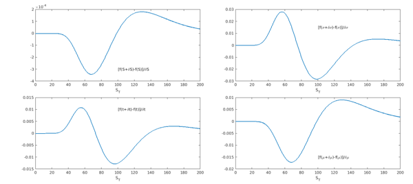
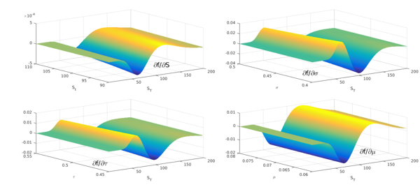
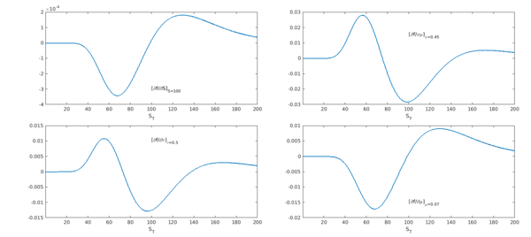
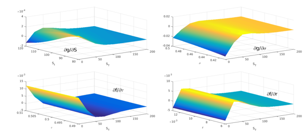
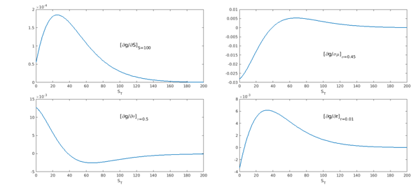

Introduction
The concept of decomposing a derivative contract in its risk sensitivities is among the foundations of the modern finance edifice. Collectively known as the Greeks, they correspond to variations of the derivative under small changes of underlying assets or parameters. They are ubiquitous in the daily routine of financial institutions as they are unavoidable for hedging purposes, risk management, profit and loss allocation, etc. At their root, their usefulness arises from their capability to produce a low-order approximation of the derivative when regarded as terms in a Taylor expansion.
In this example we calculate the Greeks with the help of Chebfun. The methodology is an extension of the one introduced in a previous Chebfun example for the pricing of contingent claims (see Pricing a European call option). We focus our attention on European calls and puts, valued in the Black-Scholes framework, but we believe the method can be extended to work under more general settings.
Bumping the probability density function
Suppose the random variable $S_t$ follows a geometric Brownian motion (GBM) with drift $\mu$ and volatility $\sigma$. At time $t=T$ the probability density function (PDF) $f$ of $S_T$ (variable ST) is that of a lognormal distribution implemented in the following function handle f.
f = @(ST,St,vol,tau,mu) exp( - ( log(ST./St) - (mu-0.5*vol.^2).*(tau) ).^2./...
(2*vol.^2.*(tau)) ) ./(vol.*ST.*sqrt(2*pi*(tau)));
Here, the variables St, vol, tau and mu represent the value of the asset at time $t$, the volatility, the variable $\tau=T-t$ (i.e., the time to expiry), and the drift respectively. How can we calculate the sensitivity of the distribution of $S_T$ with respect to $S_0$, $\sigma$, $\tau$ and $\mu$? A straightforward approach is to "bump" each of these values by a small quantity $\delta$, subtract it from the original distribution, and scale it by $\delta$. Effectively what we are doing is to calculate the partial derivatives through forward finite differences.
LW = 'linewidth';
FS = 'fontsize';
PS = 'position';
PS1 = [0.085 0.56 0.40 0.39]; PS2 = [0.57 0.56 0.40 0.39];
PS3 = [0.085 0.08 0.40 0.39]; PS4 = [0.57 0.08 0.40 0.39];
dom = [0 200];
St = 100; vol = 0.45; tau = 0.5; mu = 0.07;
PDF = chebfun(@(s) f(s, St, vol, tau, mu), dom);
dSt = 0.001; dvol = 0.0001; dtau = 0.0001; dmu = 0.0001;
PDF_St = chebfun(@(s) f(s, St + dSt, vol, tau, mu), dom );
PDF_vol = chebfun(@(s) f(s, St, vol + dvol, tau, mu), dom );
PDF_t = chebfun(@(s) f(s, St, vol, tau + dtau, mu), dom );
PDF_mu = chebfun(@(s) f(s, St, vol, tau, mu + dmu), dom );
subplot(2,2,1), plot((PDF_St-PDF)/dSt,LW,1.6), set(gca,PS,PS1,FS,14),
xlabel('S_T'), text(100, -3e-4,'[f(S+\deltaS)-f(S)]/\deltaS',FS,14)
subplot(2,2,2), plot((PDF_vol-PDF)/dvol,LW,1.6), set(gca,PS,PS2,FS,14),
xlabel('S_T'), text(100, 0.015,'[f(\sigma+\delta\sigma)-f(\sigma)]/\delta\sigma',FS,14)
subplot(2,2,3), plot((PDF_t-PDF)/dtau,LW,1.6), set(gca,PS,PS3,FS,14),
xlabel('S_T'), text(100, 0.01,'[f(t+\deltat)-f(t)]/\deltat',FS,14)
subplot(2,2,4), plot((PDF_mu-PDF)/dmu,LW,1.6), set(gca,PS,PS4,FS,14),
xlabel('S_T'), text(100, -0.015,'[f(\mu+\delta\mu)-f(\mu)]/\delta\mu',FS,14)

Partial derivatives and chebfun2 objects
Chebfun provides an alternative way of performing the previous calculation. We construct 2D chebfuns, with the two variables being the terminal asset price $S_T$ and the variable of which the sensitivity is calculated. In a sense, these are "two-dimensional slices" of the five-dimensional function describing the PDF.
minS = 0.01; slice_St = chebfun2(@(s,SSt) f(s, SSt, vol, tau, mu), [minS 200 90 110]); slice_vol = chebfun2(@(s,vvol) f(s, St, vvol, tau, mu), [minS 200 0.40 0.5]); slice_tau = chebfun2(@(s,ttau) f(s, St, vol, ttau, mu), [minS 200 0.45 0.55]); slice_mu = chebfun2(@(s,mmu) f(s, St, vol, tau, mmu), [minS 200 0.06 0.08]);
We calculate the partial derivative of each slice with respect to the second variable using the diff command for chebfun2 objects.
partial_St = diff(slice_St,[0 1]);
partial_vol = diff(slice_vol,[0 1]);
partial_tau = diff(slice_tau,[0 1]);
partial_mu = diff(slice_mu,[0 1]);
subplot(2,2,1), plot(partial_St,LW,1.6), set(gca,PS,PS1,FS,14),
xlabel('S_T'), ylabel('S_t'), text(110, 92,-3e-4,'\partialf/\partialS',FS,24)
subplot(2,2,2), plot(partial_vol,LW,1.6), set(gca,PS,PS2,FS,14),
xlabel('S_T'), ylabel('\sigma'), text(10, 0.42,-0.03,'\partialf/\partial\sigma',FS,24)
subplot(2,2,3), plot(partial_tau,LW,1.6), set(gca,PS,PS3,FS,14),
xlabel('S_T'), ylabel('\tau'), text(-50, 0.44,-0.006,'\partialf/\partial\tau',FS,24)
subplot(2,2,4), plot(partial_mu,LW,1.6), set(gca,PS,PS4,FS,14),
xlabel('S_T'), ylabel('\mu'), text(100, 0.06,-0.01,'\partialf/\partial\mu',FS,24)

From each partial derivative we extract the function at the level on which the second variable is prescribed. Notice the similarity with the figures above.
subplot(2,2,1), plot(partial_St(:,St),LW,1.6), set(gca,PS,PS1,FS,14),
xlabel('S_T'), text(100, -3e-4,'[\partialf/\partialS]_{S=100}',FS,14)
subplot(2,2,2), plot(partial_vol(:,vol),LW,1.6), set(gca,PS,PS2,FS,14),
xlabel('S_T'), text(100, 0.015,'[\partialf/\sigma\mu]_{\sigma=0.45}',FS,14)
subplot(2,2,3), plot(partial_tau(:,tau),LW,1.6), set(gca,PS,PS3,FS,14),
xlabel('S_T'), text(100, 0.01,'[\partialf/\partial\tau]_{\tau=0.5}',FS,14)
subplot(2,2,4), plot(partial_mu(:,mu),LW,1.6), set(gca,PS,PS4,FS,14),
xlabel('S_T'), text(100, -0.015,'[\partialf/\partial\mu]_{\mu=0.07}',FS,14)

Calculation of the Greeks
The price $V$ of a European option is the expected value (under the risk neutral measure) of its discounted terminal payoff. In the Black-Scholes framework the process is a GBM and the associated distribution is the lognormal we showed in the previous section. In order to change the measure to the risk-neutral one we replace the drift $\mu$ with the risk-free interest rate $r$:
r = 0.01;
f = @(ST,St,vol,tau,r) exp( - ( log(ST./St) - (r-0.5*vol.^2).*tau ).^2./...
(2*vol.^2.*tau) ) ./(vol.*ST.*sqrt(2*pi*tau));
As we showed in previous examples, we can obtain the distribution of the payoff through the following transformation:
$$ g(y) = f(x(y)) \Biggl|\frac{dx}{dy}\Biggr|, $$
where $f$ is the PDF at maturity of the underlying asset $x$, $g$ is the distribution of the payoff, and $y(x)$ is the function specifying the payoff profile as a function of $x$. This transformation holds for monotonically increasing or decreasing functions $y$, so it is customary to split its domain in such regions. For intervals where $y$ is constant, $y(x) = c$, the contribution to the PDF of $g$ is a Dirac delta located at $c$ and weight equal to the risk-neutral probability of ending in that region. For a call option we saw that the increasing interval of $y$ is $[K,\infty)$, with $y = S - K$. For a put option the decreasing interval of $y$ is $[0,K]$ with $y = K - S$. The expected value of the payoff distribution is given by
$$ V = E^Q[e^{-r(T-t)} g] = \int_{-\infty}^\infty e^{-r(T-t)} y g(y) dy \ \ (1) $$
which we calculate with the Chebfun command sum.
The Greeks are the Taylor sensitivities to the parameters specifying the asset's distribution: $S_t$, $\sigma$, $\tau$ and $r$ in our case. The most important Greeks that one looks to obtain are the linear terms, however second order terms (including some of the "cross-terms") are also calculated and used often in practice.
The terms Delta ($\Delta$), Vega ($\nu$), Theta ($\Theta$) and Rho ($\rho$) refer to the linear sensitivities of the price:
$$\Delta:=\partial V/\partial S$$
$$\nu:=\partial V/\partial \sigma$$
$$\Theta:= -\partial V/\partial\tau $$
$$ \rho:=\partial V/\partial r $$
Notice that $\Theta$ is defined as the negative partial derivative with respect to the time to maturity. (Also notice that "Vega" is not a Greek letter!)
It follows from (1) that the Greek for an underlying variable $x_i$ of $f$ can be calculated as
$$ \frac{\partial V}{\partial x_i} = \frac{\partial}{\partial x_i} \int_{-\infty}^\infty e^{-r(T-t)} y g(y) dy = \int_{-\infty}^\infty y \frac{\partial[e^{-r(T-t)}g(y)]}{\partial x_i} dy \ \ \ (2) $$
Notice that if $x_i$ is $r$ or $\tau$, one also includes the discount factor in the term to be derived.
We calculate the Greeks by evaluating formula (2). We construct the partial derivative inside the integral as we did in the previous section: we calculate the partial derivative from a 2D slice from the PDF.
K = 100; W = 1; domx = 5000; minS = 0; slice_St = chebfun2(@(S,SSt) exp(-r*tau) .* f(W*S+K,SSt,vol,tau,r),[minS domx 80 120]); slice_vol = chebfun2(@(S,vvol) exp(-r*tau) .* f(W*S+K,St,vvol,tau,r),[minS domx 0.41 .5]); slice_tau = chebfun2(@(S,ttau)-exp(-r*ttau).* f(W*S+K,St,vol,ttau,r),[minS domx 0.49 0.51]); slice_r = chebfun2(@(S,rr) exp(-rr*tau).* f(W*S+K,St,vol,tau,rr),[minS domx 0.006 0.013]);
We can calculate now the partial derivatives with respect to the second variable using the diff command for chebfun2 objects.
slice_delta = diff(slice_St,[0 1]);
slice_vega = diff(slice_vol,[0 1]);
slice_theta = diff(slice_tau,[0 1]);
slice_rho = diff(slice_r,[0 1]);
plotS = 200;
subplot(2,2,1), plot(slice_delta,LW,1.6), set(gca,PS,PS1,FS,14),
xlabel('S_T'), ylabel('S_t'), xlim([0 200]), text(80, 112,-3e-4,'\partialg/\partialS',FS,24)
subplot(2,2,2), plot(slice_vega,LW,1.6), set(gca,PS,PS2,FS,14),
xlabel('S_T'), ylabel('\sigma'),xlim([0 200]), text(100, 0.42,-0.03,'\partialg/\partial\sigma',FS,24)
subplot(2,2,3), plot(slice_theta,LW,1.6), set(gca,PS,PS3,FS,14),
xlabel('S_T'), ylabel('\tau'), xlim([0 200]),text(100, 0.49,0.015,'\partialf/\partial\tau',FS,24)
subplot(2,2,4), plot(slice_rho,LW,1.6), set(gca,PS,PS4,FS,14),
xlabel('S_T'), ylabel('r'), xlim([0 200]), text(100, 0.005 ,.009,'\partialf/\partialr',FS,24)

We extract the partial derivatives at the level prescribed for the second variable:
dgds = slice_delta(:,St)';
dgdvol = slice_vega(:,vol)';
dgdt = slice_theta(:,tau)';
dgdr = slice_rho(:,r)';
subplot(2,2,1), plot(dgds,LW,1.6), set(gca,PS,PS1,FS,14),
xlabel('S_T'), xlim([0 200]), text(100, 1.e-4,'[\partialg/\partialS]_{S=100}',FS,18)
subplot(2,2,2), plot(dgdvol,LW,1.6), set(gca,PS,PS2,FS,14),
xlabel('S_T') , xlim([0 200]), text(100, -0.015,'[\partialg/\sigma\mu]_{\sigma=0.45}',FS,18)
subplot(2,2,3), plot(dgdt,LW,1.6), set(gca,PS,PS3,FS,14),
xlabel('S_T'), xlim([0 200]), text(100, 0.01,'[\partialg/\partial\tau]_{\tau=0.5}',FS,18)
subplot(2,2,4), plot(dgdr,LW,1.6), set(gca,PS,PS4,FS,14),
xlabel('S_T'), xlim([0 200]), text(100, 5e-3,'[\partialg/\partialr]_{r=0.01}',FS,18)

The last step is the calculation of the expected value using sum:
xx = chebfun('x',[minS domx]);
call_delta_approx = sum(xx.*dgds);
call_vega_approx = sum(xx.*dgdvol);
call_theta_approx = sum(xx.*dgdt);
call_rho_approx = sum(xx.*dgdr);
disp(['delta approx [call] = ' num2str(call_delta_approx,'%10.15f')])
disp(['vega approx [call] = ' num2str(call_vega_approx,'%10.15f')])
disp(['theta approx [call] = ' num2str(call_theta_approx,'%10.15f')])
disp(['rho approx [call] = ' num2str(call_rho_approx,'%10.15f')])
delta approx [call] = 0.569386520857145 vega approx [call] = 27.781724710882138 theta approx [call] = -12.942558625368989 rho approx [call] = 22.039170710749307
Following exactly the same procedure, we calculate the Greeks of a put, using the appropriate domain.
W = -1; domx = 99;
First we construct the 2D chebfuns of the slices:
slice_St = chebfun2(@(S,SSt) exp(-r*tau) .* f(W*S+K,SSt,vol,tau,r),[minS domx 80 120]); slice_vol = chebfun2(@(S,vvol) exp(-r*tau) .* f(W*S+K,St,vvol,tau,r),[minS domx 0.41 .5]); slice_tau = chebfun2(@(S,ttau)-exp(-r*ttau).* f(W*S+K,St,vol,ttau,r),[minS domx 0.49 0.51]); slice_r = chebfun2(@(S,rr) exp(-rr*tau).* f(W*S+K,St,vol,tau,rr),[minS domx 0.006 0.013]);
Then we take the partial derivatives:
slice_delta = diff(slice_St,[0 1]); slice_vega = diff(slice_vol,[0 1]); slice_theta = diff(slice_tau,[0 1]); slice_rho = diff(slice_r,[0 1]);
Finally, we evaluate the second variable at its prescribed level and compute the expected value:
xx = chebfun('x',[minS domx]);
put_delta_approx = sum(xx.*slice_delta(:,St)');
put_vega_approx = sum(xx.*slice_vega(:,vol)');
put_theta_approx = sum(xx.*slice_theta(:,tau)');
put_rho_approx = sum(xx.*slice_rho(:,r)');
disp(['delta approx [put] = ' num2str(put_delta_approx,'%10.15f')])
disp(['vega approx [put] = ' num2str(put_vega_approx,'%10.15f')])
disp(['theta approx [put] = ' num2str(put_theta_approx,'%10.15f')])
disp(['rho approx [put] = ' num2str(put_rho_approx,'%10.15f')])
delta approx [put] = -0.430613479154512 vega approx [put] = 27.781722924228042 theta approx [put] = -11.947546250953261 rho approx [put] = -27.711453237448065
Comparison with Black-Scholes
The Black-Scholes formulas can be used to obtain analytical expressions for the Greeks [1], which we implement for a call:
W = 1;
d1 = (log(St./K) + (r+0.5*vol.^2).*tau)./(vol.*sqrt(tau));
d2 = d1 - vol.*sqrt(tau);
call_delta_exact = W.*normcdf(W.*d1);
call_vega_exact = K*exp(-r*tau)*normpdf(d2)*sqrt(tau);
call_theta_exact = -(St*normpdf(d1)*vol)/(2*sqrt(tau)) - ...
W*r*K*exp(-r*tau)*normcdf(W*d2);
call_rho_exact = W*K*tau*exp(-r*tau)*normcdf(W*d2);
And now for a put (notice that Vega is the same for a call and a put):
W = -1;
d1 = (log(St./K) + (r+0.5*vol.^2).*tau)./(vol.*sqrt(tau));
d2 = d1 - vol.*sqrt(tau);
put_delta_exact = W.*normcdf(W.*d1);
put_vega_exact = K*exp(-r*tau)*normpdf(d2)*sqrt(tau);
put_theta_exact = -(St*normpdf(d1)*vol)/(2*sqrt(tau)) - ...
W*r*K*exp(-r*tau)*normcdf(W*d2);
put_rho_exact = W*K*tau*exp(-r*tau)*normcdf(W*d2);
We summarize our results in the following table
disp(' call put')
disp(['delta exact : ' num2str(call_delta_exact,'%10.15f') ' ' ...
num2str(put_delta_exact,'%10.15f')])
disp(['delta approx : ' num2str(call_delta_approx,'%10.15f') ' ' ...
num2str(put_delta_approx,'%10.15f')])
disp(['delta error : ' num2str(abs((call_delta_exact-call_delta_approx)/call_delta_exact)) ...
' ' num2str(abs((put_delta_exact-put_delta_approx)/put_delta_exact)) ])
disp('-------------------------------------------------------')
disp(['vega exact : ' num2str(call_vega_exact,'%10.15f') ' ' ...
num2str(put_vega_exact,'%10.15f')])
disp(['vega approx : ' num2str(call_vega_approx,'%10.15f') ' '...
num2str(put_vega_approx,'%10.15f')])
disp(['vega error : ' num2str(abs((call_vega_exact-call_vega_approx)/call_vega_exact))...
' ' num2str(abs((put_vega_exact-put_vega_approx)/put_vega_exact)) ])
disp('-------------------------------------------------------')
disp(['theta exact : ' num2str(call_theta_exact,'%10.15f') ' '...
num2str(put_theta_exact,'%10.15f')])
disp(['theta approx : ' num2str(call_theta_approx,'%10.15f') ' ' ...
num2str(put_theta_approx,'%10.15f')])
disp(['theta error : ' num2str(abs((call_theta_exact-call_theta_approx)/call_theta_exact))...
' ' num2str(abs((put_theta_exact-put_theta_approx)/put_theta_exact))])
disp('-------------------------------------------------------')
disp(['rho exact : ' num2str(call_rho_exact,'%10.15f') ' ' ...
num2str(put_rho_exact,'%10.15f')])
disp(['rho approx : ' num2str(call_rho_approx,'%10.15f') ' '...
num2str(put_rho_approx,'%10.15f')])
disp(['rho error : ' num2str(abs((call_rho_exact-call_rho_approx)/call_rho_exact))...
' ' num2str(abs((put_rho_exact-put_rho_approx)/put_rho_exact))])
disp('-------------------------------------------------------')
call put delta exact : 0.569386520845488 -0.430613479154512 delta approx : 0.569386520857145 -0.430613479154512 delta error : 2.0473e-11 1.0313e-15 ------------------------------------------------------- vega exact : 27.781722924220272 27.781722924220272 vega approx : 27.781724710882138 27.781722924228042 vega error : 6.4311e-08 2.7967e-13 ------------------------------------------------------- theta exact : -12.942558730342391 -11.947546251149708 theta approx : -12.942558625368989 -11.947546250953261 theta error : 8.1107e-09 1.6442e-11 ------------------------------------------------------- rho exact : 22.039170722163501 -27.711453237470618 rho approx : 22.039170710749307 -27.711453237448065 rho error : 5.179e-10 8.1384e-13 -------------------------------------------------------
Discussion
In practice, it is very common to rely on "bumping" the underlying factors to obtain the Greeks, as it requires only to perform an extra evaluation of the price and, for many cases, one can expect to obtain 4 or 5 digits of accuracy. The method presented here is general and seems to be very accurate, but further work would be necessary to establish its robustness and usefulness.
References
[1] J. Hull, Options, Futures and Other Derivatives, Pearson Education, 9th edition, 2014.